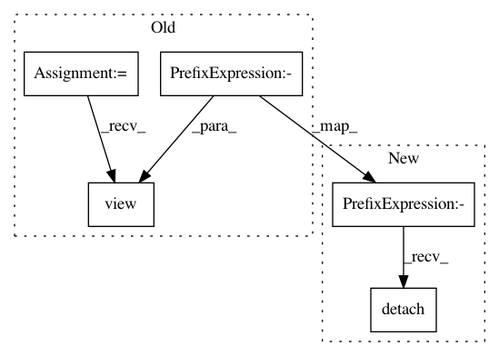

447444fd06594e531ae1141afac78051481e4468,catalyst/rl/offpolicy/algorithms/sac.py,SAC,_quantile_loss,#SAC#Any#Any#Any#Any#Any#,195
Before Change
// (B * num_heads,)
// @TODO smarter way to do this (other than reshaping)?
atoms_tp1 = atoms_tp1.view(-1, self.num_atoms, self._num_critics)
atoms_tp1 = atoms_tp1[range(len(atoms_tp1)), :, atoms_ids_tp1_min].\
view(-1, self._num_heads, self.num_atoms)
// B x num_heads x num_atoms
// Same log_pi for each head.
atoms_tp1 = (atoms_tp1 - logprob_tp1.unsqueeze(1)).detach()
atoms_target_t = rewards_t + (1 - done_t) * gammas * atoms_tp1
value_loss = [
utils.quantile_loss(
x.view(-1, self.num_atoms),
atoms_target_t.view(-1, self.num_atoms),
self.tau,
self.num_atoms,
self.critic_criterion
After Change
atoms_tp1 = (atoms_tp1 - logprob_tp1.unsqueeze(1)).detach()
// [bs; num_heads; num_atoms] -> many-heads view transform
// [{bs * num_heads}; num_atoms]
atoms_target_t = (
rewards_t + (1 - done_t) * gammas * atoms_tp1
).view(-1, self.num_atoms).detach()
value_loss = [
utils.quantile_loss(
// [{bs * num_heads}; num_atoms]
In pattern: SUPERPATTERN
Frequency: 4
Non-data size: 5
Instances
Project Name: Scitator/catalyst
Commit Name: 447444fd06594e531ae1141afac78051481e4468
Time: 2019-10-31
Author: scitator@gmail.com
File Name: catalyst/rl/offpolicy/algorithms/sac.py
Class Name: SAC
Method Name: _quantile_loss
Project Name: Scitator/catalyst
Commit Name: 447444fd06594e531ae1141afac78051481e4468
Time: 2019-10-31
Author: scitator@gmail.com
File Name: catalyst/rl/offpolicy/algorithms/dqn.py
Class Name: DQN
Method Name: _quantile_loss